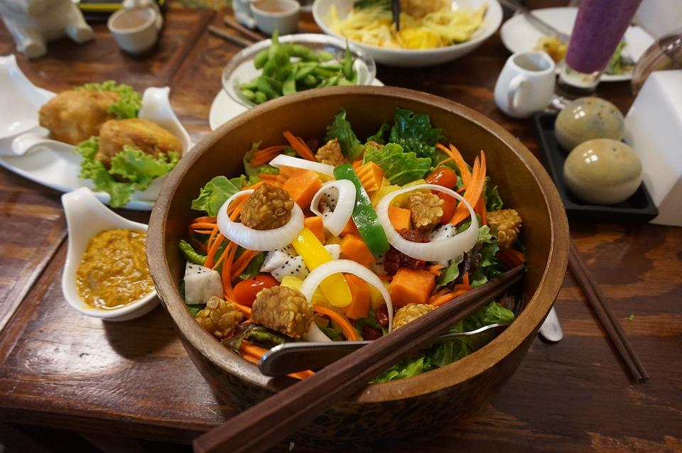

Picture the diner of your dreams, minus the quart of leftover bacon grease coating the grill.
All the brekkie basics are here, all sans meat, from Benedicts to egg sandwiches to pancakes.
There's a corned beef seitan hash, too, as well as a vegetarian-gravy poutine, the holy grail of
the meat-free community. But it's during lunch and dinner that things really get interesting: a meatless BLT? Reuben?
Shepard's pie? Your best bet is probably to eat your way through the entire menu to ascertain the success of each reconceived dish.
"Eat clean" is pretty much a meaningless directive -- what, we’ve just been munching on filth all these years? But the case for vegetarianism
-- and its more principled older sister, veganism -- is pretty ironclad (cute animals, preservation of our environment, future of humanity, etc.). So, where to get your meatless mangia on?
Even your paleo pals occasionally go vegan for this mini food empire.
Initially the food truck brainchild of a graduate of MIT, Clover has gone
on to reinvent the city’s fast food scene entirely. With a bottomless
commitment to food that is fresh, inventive, and, yup, vegan, every Clover
outpost -- now at 16 and counting -- proves that you just don’t need animal
protein when classics like barbecue seitan and chickpea fritters are on the
menu. And then there’s that addictive lavender lemonade...
September 2016
September 9th, 2016.
August 2016
August 28th, 2016.
august 20th, 2016.
July 2016
July 30th, 2016.
July 14th, 2016.
June 2016
june 5th, 2016.
May 2016
May 31st, 2016.
May 6th, 2016.